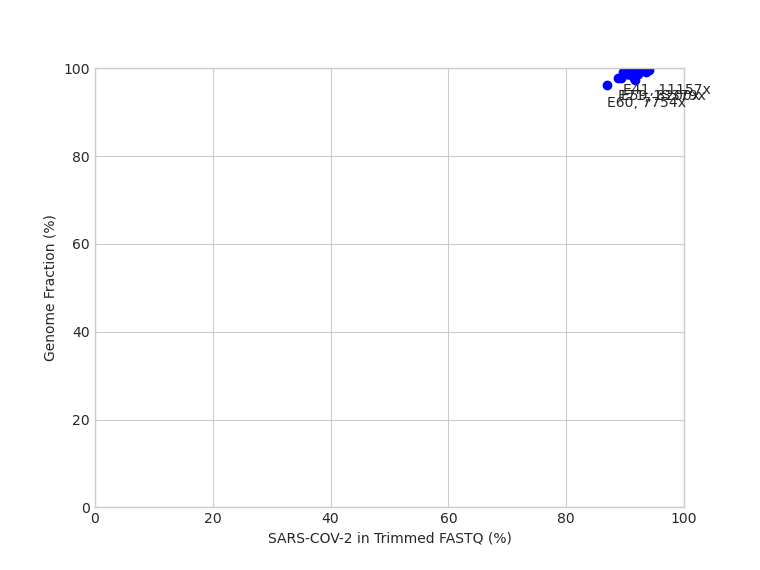
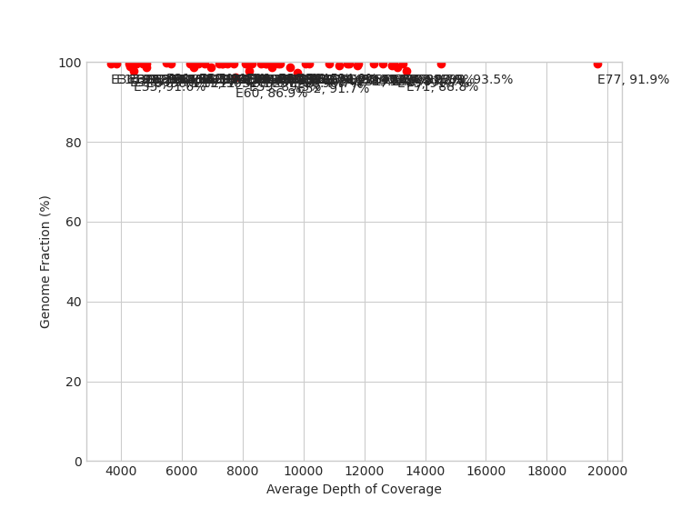
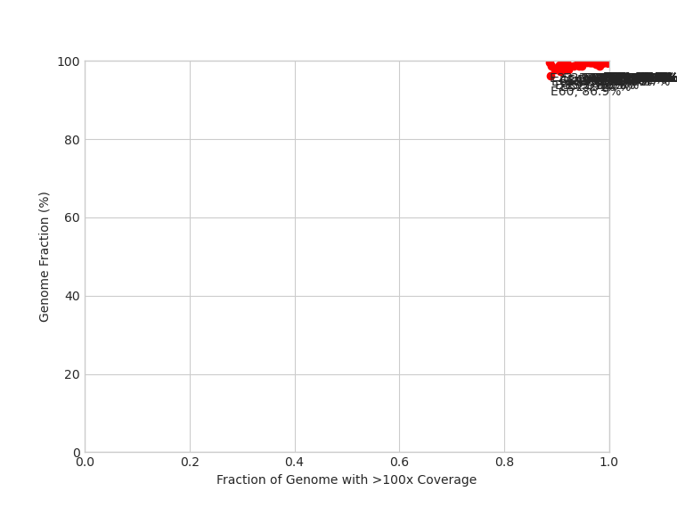

Note: Asterisks (*) indicates a discrepancy between iVar (default) and FreeBayes (if run)
|  |  |  |
| Sample | Lineage (Pangolin) | Clade (Nextstrain) | Data Volume | Quality Control Flags | Kraken2 | QUAST | Variants (iVar) | Unique Variants (FreeBayes) | Consensus Nucleotide Differences (FreeBayes as Reference) | Variants (BreSeq) | ||||||||||||
|---|---|---|---|---|---|---|---|---|---|---|---|---|---|---|---|---|---|---|---|---|---|---|
| Raw Data (read pairs) |
Post Trim (read pairs) |
Genome fraction >90% |
No indels |
Depth >2000 |
Variants >90% |
ORF Frameshifts |
Fastqc quality |
Fastqc adapter |
90% cov >100 |
90% cov >1000 |
Reads SARS-CoV-2 (%) |
Genome Length (bp) |
Genome Fraction (%) |
N's per 100 kbp |
Average Depth of Coverage |
|||||||
| E10 | B.1 |
20C |
582337 | 581592 | PASS | PASS | PASS | WARN | FAIL | PASS | PASS | PASS | PASS | 92.58 | 29903.0 | 99.679 | 324.38 | 8118.7 | C241T C1059T C1427T C3037T C11916T C14408T C18998T (+ 5 more) |
|
|
RA; 241; C→T; (100%); 'intergenic (–/-25)'; '– /→ orf1ab' RA; 1,059; C→T; (100%); 'T265I (ACC→ATC)'; 'orf1ab →' RA; 1,427; C→T; (28.9%); 'H388Y (CAT→TAT)'; 'orf1ab →' RA; 3,037; C→T; (100%); 'F924F (TTC→TTT)'; 'orf1ab →' RA; 11,916; C→T; (100%); 'S3884L (TCA→TTA)'; 'orf1ab →' RA; 14,408; C→T; (100%); 'P314L (CCT→CTT)'; 'orf1ab →' RA; 18,998; C→T; (100%); 'A1844V (GCA→GTA)'; 'orf1ab →' (+ 6 more) |
| E11 | B.1 |
20C |
515465 | 514740 | PASS | PASS | PASS | WARN | FAIL | PASS | PASS | PASS | WARN | 92.12 | 29903.0 | 98.746 | 1264.09 | 6941.6 | C241T C1059T C3037T C11916T C14408T C17977T C18998T (+ 6 more) |
|
NNNNNN23145AAAAGT |
RA; 241; C→T; (100%); 'intergenic (–/-25)'; '– /→ orf1ab' JC; 511; Δ14 bp; (5.8%); 'coding (246-259/13203nt)'; 'orf1ab →' RA; 1,059; C→T; (100%); 'T265I (ACC→ATC)'; 'orf1ab →' RA; 3,037; C→T; (100%); 'F924F (TTC→TTT)'; 'orf1ab →' RA; 3,176; C→T; (21.3%); 'P971S (CCT→TCT)'; 'orf1ab →' JC; 6,038; Δ3 bp; (6.1%); 'coding (5773-5775/13203nt)'; 'orf1ab →' RA; 9,403; Δ1 bp; (8.7%); 'coding (9138/13203nt)'; 'orf1ab →' (+ 14 more) |
| E12 | B.1 |
20C |
622754 | 621922 | PASS | PASS | PASS | WARN | WARN | PASS | PASS | PASS | WARN | 93.48 | 29903.0 | 99.676 | 324.38 | 8585.7 | C241T C1059T C3037T C11916T C14408T C18998T A23403G (+ 3 more) |
|
|
RA; 241; C→T; (100%); 'intergenic (–/-25)'; '– /→ orf1ab' JC; 518; Δ6 bp; (5.9%); 'coding (253-258/13203nt)'; 'orf1ab →' RA; 1,059; C→T; (100%); 'T265I (ACC→ATC)'; 'orf1ab →' RA; 3,037; C→T; (100%); 'F924F (TTC→TTT)'; 'orf1ab →' RA; 7,081; C→T; (8.4%); 'N2272N (AAC→AAT)'; 'orf1ab →' RA; 11,916; C→T; (100%); 'S3884L (TCA→TTA)'; 'orf1ab →' RA; 13,219; A→G; (7.7%); 'Q4318Q (CAA→CAG)'; 'orf1ab →' (+ 6 more) |
| E13 | B.1.147 |
20A |
578467 | 577580 | PASS | PASS | PASS | WARN | PASS | PASS | PASS | PASS | PASS | 92.85 | 29903.0 | 99.736 | 267.53 | 7707.8 | C241T C3037T C14262A C14408T C15324T A23403G C25433T |
|
|
RA; 241; C→T; (100%); 'intergenic (–/-25)'; '– /→ orf1ab' RA; 3,037; C→T; (100%); 'F924F (TTC→TTT)'; 'orf1ab →' RA; 14,262; C→A; (42.9%); 'D265E (GAC→GAA)'; 'orf1ab →' RA; 14,408; C→T; (100%); 'P314L (CCT→CTT)'; 'orf1ab →' RA; 15,324; C→T; (100%); 'N619N (AAC→AAT)'; 'orf1ab →' RA; 23,403; A→G; (100%); 'D614G (GAT→GGT)'; 'S →' RA; 25,433; C→T; (100%); 'T14I (ACT→ATT)'; 'ORF3a →' JC; 28,192; 63 bp→8 bp; (21.2%); 'coding (299-361/366nt)'; 'ORF8 →' |
| E14 | B.1.147 |
20A |
542949 | 542141 | PASS | PASS | PASS | WARN | FAIL | PASS | PASS | PASS | WARN | 93.97 | 29903.0 | 99.736 | 264.19 | 7494.8 | G61T C241T C3037T C14408T C15324T G15906A C17690T (+ 4 more) |
|
|
RA; 61; G→T; (100%); 'intergenic (–/-205)'; '– /→ orf1ab' RA; 241; C→T; (100%); 'intergenic (–/-25)'; '– /→ orf1ab' RA; 3,037; C→T; (100%); 'F924F (TTC→TTT)'; 'orf1ab →' RA; 14,408; C→T; (100%); 'P314L (CCT→CTT)'; 'orf1ab →' RA; 15,324; C→T; (100%); 'N619N (AAC→AAT)'; 'orf1ab →' RA; 15,906; G→A; (100%); 'Q813Q (CAG→CAA)'; 'orf1ab →' RA; 17,690; C→T; (100%); 'S1408L (TCA→TTA)'; 'orf1ab →' (+ 6 more) |
| E15 | B.1.147 |
20A |
277056 | 276665 | PASS | PASS | PASS | WARN | PASS | PASS | PASS | PASS | WARN | 93.6 | 29903.0 | 99.676 | 324.38 | 3847.2 | G61T C241T C3037T C14408T C15324T G15906A C17690T (+ 3 more) |
|
|
RA; 3,037; C→T; (100%); 'F924F (TTC→TTT)'; 'orf1ab →' RA; 14,408; C→T; (100%); 'P314L (CCT→CTT)'; 'orf1ab →' RA; 15,324; C→T; (100%); 'N619N (AAC→AAT)'; 'orf1ab →' RA; 15,906; G→A; (100%); 'Q813Q (CAG→CAA)'; 'orf1ab →' RA; 17,690; C→T; (100%); 'S1408L (TCA→TTA)'; 'orf1ab →' JC; 21,481; 71 bp→13 bp; (7.6%); 'coding (8014-8084/8088nt)'; 'orf1ab →' RA; 23,403; A→G; (100%); 'D614G (GAT→GGT)'; 'S →' (+ 2 more) |
| E16 | B.1.147 |
20A |
322224 | 321125 | PASS | PASS | PASS | WARN | PASS | PASS | PASS | PASS | PASS | 93.42 | 29903.0 | 99.692 | 307.66 | 4505.0 | C241T C3037T T5977C T6980A C14408T C15324T C17690T (+ 4 more) |
|
|
RA; 241; C→T; (100%); 'intergenic (–/-25)'; '– /→ orf1ab' RA; 3,037; C→T; (100%); 'F924F (TTC→TTT)'; 'orf1ab →' RA; 5,977; T→C; (100%); 'N1904N (AAT→AAC)'; 'orf1ab →' RA; 6,980; T→A; (100%); 'C2239S (TGC→AGC)'; 'orf1ab →' RA; 14,408; C→T; (100%); 'P314L (CCT→CTT)'; 'orf1ab →' RA; 15,324; C→T; (100%); 'N619N (AAC→AAT)'; 'orf1ab →' RA; 17,690; C→T; (100%); 'S1408L (TCA→TTA)'; 'orf1ab →' (+ 5 more) |
| E18 | B.1.147 |
20A |
401858 | 401352 | PASS | PASS | PASS | WARN | PASS | PASS | PASS | PASS | PASS | 93.87 | 29903.0 | 99.676 | 324.38 | 5641.8 | C241T C3037T C14408T C15324T C17690T A23403G C25433T G28621T |
|
|
RA; 241; C→T; (100%); 'intergenic (–/-25)'; '– /→ orf1ab' RA; 3,037; C→T; (100%); 'F924F (TTC→TTT)'; 'orf1ab →' RA; 7,388; G→A; (5.1%); 'A2375T (GCC→ACC)'; 'orf1ab →' RA; 14,408; C→T; (100%); 'P314L (CCT→CTT)'; 'orf1ab →' RA; 15,324; C→T; (100%); 'N619N (AAC→AAT)'; 'orf1ab →' RA; 17,690; C→T; (75.5%); 'S1408L (TCA→TTA)'; 'orf1ab →' JC; 21,481; 71 bp→13 bp; (5.5%); 'coding (8014-8084/8088nt)'; 'orf1ab →' (+ 3 more) |
| E19 | B.1.147 |
20A |
477170 | 476498 | PASS | PASS | PASS | WARN | FAIL | PASS | PASS | PASS | WARN | 90.42 | 29903.0 | 98.756 | 1247.37 | 6394.3 | C241T C3037T C9733T C14408T C15324T G16639T A23403G (+ 2 more) |
|
|
RA; 203; C→T; (8.4%); 'intergenic (–/-63)'; '– /→ orf1ab' RA; 241; C→T; (100%); 'intergenic (–/-25)'; '– /→ orf1ab' RA; 815; C→T; (7.1%); 'R184C (CGC→TGC)'; 'orf1ab →' RA; 1,484; G→T; (5.9%); 'G407* (GGA→TGA)'; 'orf1ab →' JC; 2,414; Δ25 bp; (6.8%); 'coding (2149-2173/13203nt)'; 'orf1ab →' RA; 3,037; C→T; (100%); 'F924F (TTC→TTT)'; 'orf1ab →' RA; 3,714; C→T; (13.4%); 'S1150L (TCA→TTA)'; 'orf1ab →' (+ 30 more) |
| E20 | B.1.147 |
20A |
600045 | 599183 | PASS | PASS | PASS | WARN | FAIL | PASS | PASS | PASS | PASS | 92.96 | 29903.0 | 99.766 | 234.09 | 8108.5 | C241T C3037T C14408T C15324T C17690T C19374T A23403G (+ 2 more) |
|
|
RA; 241; C→T; (100%); 'intergenic (–/-25)'; '– /→ orf1ab' RA; 3,037; C→T; (100%); 'F924F (TTC→TTT)'; 'orf1ab →' RA; 14,408; C→T; (100%); 'P314L (CCT→CTT)'; 'orf1ab →' RA; 15,324; C→T; (100%); 'N619N (AAC→AAT)'; 'orf1ab →' RA; 17,690; C→T; (82.6%); 'S1408L (TCA→TTA)'; 'orf1ab →' RA; 19,374; C→T; (100%); 'F1969F (TTC→TTT)'; 'orf1ab →' JC; 21,481; 71 bp→13 bp; (22.3%); 'coding (8014-8084/8088nt)'; 'orf1ab →' (+ 5 more) |
| E22 | B.1.147 |
20A |
350446 | 349957 | PASS | PASS | PASS | WARN | FAIL | PASS | PASS | FAIL | WARN | 92.56 | 29903.0 | 99.676 | 1160.42 | 4713.3 | C241T C3037T C14408T C15324T G23126T A23403G C25433T |
C10833T C20936T |
Y10833C Y20936C NNNNNN23145AAAAGT T27164N |
RA; 241; C→T; (100%); 'intergenic (–/-25)'; '– /→ orf1ab' RA; 884; C→T; (7.0%); 'R207C (CGT→TGT)'; 'orf1ab →' RA; 1,484; Δ1 bp; (5.3%); 'coding (1219/13203nt)'; 'orf1ab →' RA; 1,509; G→A; (5.3%); 'G415D (GGT→GAT)'; 'orf1ab →' RA; 2,062; C→T; (7.0%); 'A599A (GCC→GCT)'; 'orf1ab →' RA; 3,037; C→T; (100%); 'F924F (TTC→TTT)'; 'orf1ab →' RA; 3,327; Δ1 bp; (8.4%); 'coding (3062/13203nt)'; 'orf1ab →' (+ 57 more) |
| E24 | B.1.147 |
20A |
597666 | 596763 | PASS | PASS | PASS | WARN | FAIL | PASS | PASS | PASS | PASS | 92.98 | 29903.0 | 99.676 | 324.38 | 8283.9 | C241T T3012G C3037T C14408T C15324T C17690T A23403G (+ 2 more) |
|
|
RA; 241; C→T; (100%); 'intergenic (–/-25)'; '– /→ orf1ab' RA; 3,012; T→G; (100%); 'L916W (TTG→TGG)'; 'orf1ab →' RA; 3,037; C→T; (100%); 'F924F (TTC→TTT)'; 'orf1ab →' RA; 14,408; C→T; (100%); 'P314L (CCT→CTT)'; 'orf1ab →' RA; 15,324; C→T; (100%); 'N619N (AAC→AAT)'; 'orf1ab →' RA; 17,690; C→T; (92.0%); 'S1408L (TCA→TTA)'; 'orf1ab →' RA; 23,403; A→G; (100%); 'D614G (GAT→GGT)'; 'S →' (+ 3 more) |
| E26 | B.1 |
20C |
631492 | 630586 | PASS | PASS | PASS | WARN | PASS | PASS | PASS | PASS | PASS | 93.27 | 29903.0 | 99.676 | 324.38 | 8782.6 | C241T C1059T C3037T C9120T C11916T C14408T C18998T (+ 4 more) |
|
|
RA; 1,059; C→T; (100%); 'T265I (ACC→ATC)'; 'orf1ab →' RA; 3,037; C→T; (100%); 'F924F (TTC→TTT)'; 'orf1ab →' RA; 9,120; C→T; (100%); 'T2952I (ACA→ATA)'; 'orf1ab →' RA; 11,916; C→T; (100%); 'S3884L (TCA→TTA)'; 'orf1ab →' RA; 14,408; C→T; (100%); 'P314L (CCT→CTT)'; 'orf1ab →' RA; 18,998; C→T; (100%); 'A1844V (GCA→GTA)'; 'orf1ab →' RA; 23,403; A→G; (100%); 'D614G (GAT→GGT)'; 'S →' (+ 3 more) |
| E28 | B.1.147 |
20A |
323051 | 322535 | PASS | PASS | PASS | WARN | PASS | PASS | PASS | PASS | WARN | 93.01 | 29903.0 | 99.676 | 324.38 | 4459.8 | G61T C241T C3037T C14408T C15324T G15906A C17690T (+ 5 more) |
|
|
RA; 241; C→T; (100%); 'intergenic (–/-25)'; '– /→ orf1ab' RA; 3,037; C→T; (100%); 'F924F (TTC→TTT)'; 'orf1ab →' RA; 14,408; C→T; (100%); 'P314L (CCT→CTT)'; 'orf1ab →' RA; 15,324; C→T; (100%); 'N619N (AAC→AAT)'; 'orf1ab →' RA; 15,906; G→A; (100%); 'Q813Q (CAG→CAA)'; 'orf1ab →' RA; 17,690; C→T; (100%); 'S1408L (TCA→TTA)'; 'orf1ab →' RA; 20,104; C→T; (100%); 'L2213F (CTT→TTT)'; 'orf1ab →' (+ 6 more) |
| E29 | B.1 |
20C |
499321 | 498661 | PASS | PASS | PASS | WARN | FAIL | PASS | PASS | PASS | WARN | 92.85 | 29903.0 | 99.676 | 324.38 | 6736.3 | C241T C1059T C3037T C11916T C14408T C18998T A23403G (+ 2 more) |
|
|
RA; 241; C→T; (100%); 'intergenic (–/-25)'; '– /→ orf1ab' RA; 1,059; C→T; (100%); 'T265I (ACC→ATC)'; 'orf1ab →' RA; 3,037; C→T; (100%); 'F924F (TTC→TTT)'; 'orf1ab →' RA; 11,916; C→T; (100%); 'S3884L (TCA→TTA)'; 'orf1ab →' RA; 14,408; C→T; (100%); 'P314L (CCT→CTT)'; 'orf1ab →' RA; 18,998; C→T; (100%); 'A1844V (GCA→GTA)'; 'orf1ab →' RA; 22,139; G→C; (8.9%); 'V193L (GTG→CTG)'; 'S →' (+ 5 more) |
| E3 | B.1.147 |
20A |
325668 | 325176 | PASS | PASS | PASS | WARN | FAIL | PASS | PASS | PASS | WARN | 90.46 | 29903.0 | 99.044 | 2210.48 | 4278.5 | C3037T C12484T C14408T C15324T C17690T A23403G C25433T (+ 3 more) |
C241T |
N23144A |
RA; 241; C→T; (100%); 'intergenic (–/-25)'; '– /→ orf1ab' RA; 3,037; C→T; (100%); 'F924F (TTC→TTT)'; 'orf1ab →' RA; 4,206; C→T; (6.7%); 'A1314V (GCG→GTG)'; 'orf1ab →' RA; 5,513; Δ1 bp; (20.1%); 'coding (5248/13203nt)'; 'orf1ab →' RA; 5,514; T→A; (20.1%); 'V1750E (GTG→GAG)'; 'orf1ab →' RA; 6,289; Δ1 bp; (8.2%); 'coding (6024/13203nt)'; 'orf1ab →' RA; 6,290; Δ1 bp; (7.9%); 'coding (6025/13203nt)'; 'orf1ab →' (+ 11 more) |
| E30 | B.1.147 |
20A |
305207 | 304796 | PASS | PASS | PASS | WARN | PASS | PASS | PASS | PASS | WARN | 93.28 | 29903.0 | 99.676 | 324.38 | 4244.3 | G61T C241T C3037T A10333G C14408T C15324T G15906A (+ 5 more) |
|
|
RA; 3,037; C→T; (100%); 'F924F (TTC→TTT)'; 'orf1ab →' RA; 4,540; C→T; (6.0%); 'Y1425Y (TAC→TAT)'; 'orf1ab →' RA; 10,333; A→G; (100%); 'T3356T (ACA→ACG)'; 'orf1ab →' RA; 14,408; C→T; (100%); 'P314L (CCT→CTT)'; 'orf1ab →' RA; 15,324; C→T; (100%); 'N619N (AAC→AAT)'; 'orf1ab →' RA; 15,906; G→A; (100%); 'Q813Q (CAG→CAA)'; 'orf1ab →' RA; 17,690; C→T; (100%); 'S1408L (TCA→TTA)'; 'orf1ab →' (+ 5 more) |
| E31 | B.1 |
20C |
391993 | 391461 | PASS | PASS | PASS | WARN | FAIL | PASS | PASS | PASS | WARN | 93.48 | 29903.0 | 99.769 | 234.09 | 5483.4 | C241T C1059T C3037T C6145T A6393G C11916T C14408T (+ 7 more) |
|
|
RA; 241; C→T; (100%); 'intergenic (–/-25)'; '– /→ orf1ab' RA; 1,059; C→T; (100%); 'T265I (ACC→ATC)'; 'orf1ab →' RA; 3,037; C→T; (100%); 'F924F (TTC→TTT)'; 'orf1ab →' RA; 6,145; C→T; (100%); 'F1960F (TTC→TTT)'; 'orf1ab →' RA; 6,393; A→G; (100%); 'D2043G (GAT→GGT)'; 'orf1ab →' RA; 11,916; C→T; (100%); 'S3884L (TCA→TTA)'; 'orf1ab →' RA; 14,408; C→T; (100%); 'P314L (CCT→CTT)'; 'orf1ab →' (+ 9 more) |
| E33 | B.1 |
20C |
354145 | 353660 | PASS | WARN* | PASS | WARN | FAIL | PASS | PASS | PASS | WARN | 92.45 | 29902.0 | 99.676 | 324.39 | 4813.2 | C241T C1059T C3037T C11916T C14408T C18452T C18998T (+ 4 more) |
|
N8669T TNNNNNNN23143TAAAAGT |
RA; 241; C→T; (100%); 'intergenic (–/-25)'; '– /→ orf1ab' RA; 1,059; C→T; (100%); 'T265I (ACC→ATC)'; 'orf1ab →' RA; 1,142; C→T; (5.8%); 'L293F (CTT→TTT)'; 'orf1ab →' RA; 3,037; C→T; (100%); 'F924F (TTC→TTT)'; 'orf1ab →' RA; 7,528; C→T; (5.2%); 'V2421V (GTC→GTT)'; 'orf1ab →' RA; 11,916; C→T; (100%); 'S3884L (TCA→TTA)'; 'orf1ab →' RA; 13,555; Δ1 bp; (12.3%); 'coding (88/8088nt)'; 'orf1ab →' (+ 13 more) |
| E34 | B.1.147 |
20A |
454416 | 453802 | PASS | PASS | PASS | WARN | PASS | PASS | PASS | PASS | WARN | 93.18 | 29903.0 | 99.679 | 324.38 | 6262.9 | G61T C241T C3037T C9491T C14408T C15324T G15906A (+ 5 more) |
|
A22130R |
RA; 61; G→T; (100%); 'intergenic (–/-205)'; '– /→ orf1ab' RA; 241; C→T; (100%); 'intergenic (–/-25)'; '– /→ orf1ab' RA; 2,785; T→C; (14.8%); 'N840N (AAT→AAC)'; 'orf1ab →' RA; 3,037; C→T; (100%); 'F924F (TTC→TTT)'; 'orf1ab →' RA; 9,418; T→C; (8.1%); 'G3051G (GGT→GGC)'; 'orf1ab →' RA; 9,491; C→T; (74.2%); 'H3076Y (CAT→TAT)'; 'orf1ab →' RA; 13,421; C→T; (5.1%); 'L4386F (CTC→TTC)'; 'orf1ab →' (+ 10 more) |
| E35 | B.1.147 |
20A |
328127 | 327637 | PASS | PASS | PASS | WARN | FAIL | PASS | PASS | FAIL | WARN | 91.58 | 29903.0 | 97.703 | 2143.6 | 4420.8 | T3022C C3037T G6341T C14408T C15324T C17690T C19524T (+ 9 more) |
G13404A |
R13404G NNNNNN23145AAAAGT |
RA; 241; C→T; (100%); 'intergenic (–/-25)'; '– /→ orf1ab' JC; 511; Δ14 bp; (5.7%); 'coding (246-259/13203nt)'; 'orf1ab →' RA; 3,022; T→C; (100%); 'H919H (CAT→CAC)'; 'orf1ab →' RA; 3,037; C→T; (100%); 'F924F (TTC→TTT)'; 'orf1ab →' RA; 4,249; T→C; (9.6%); 'T1328T (ACT→ACC)'; 'orf1ab →' RA; 6,341; G→T; (100%); 'D2026Y (GAT→TAT)'; 'orf1ab →' RA; 7,848; G→T; (5.3%); 'R2528I (AGA→ATA)'; 'orf1ab →' (+ 16 more) |
| E36 | B.1 |
20C |
263362 | 262939 | PASS | PASS | PASS | WARN | FAIL | PASS | PASS | PASS | WARN | 93.19 | 29903.0 | 99.676 | 324.38 | 3653.3 | C241T C1059T G1681T C3037T G6446A C11916T C14408T (+ 6 more) |
|
|
RA; 1,059; C→T; (100%); 'T265I (ACC→ATC)'; 'orf1ab →' RA; 1,681; G→T; (100%); 'E472D (GAG→GAT)'; 'orf1ab →' RA; 3,037; C→T; (100%); 'F924F (TTC→TTT)'; 'orf1ab →' RA; 6,446; G→A; (100%); 'V2061I (GTT→ATT)'; 'orf1ab →' RA; 11,916; C→T; (100%); 'S3884L (TCA→TTA)'; 'orf1ab →' RA; 14,408; C→T; (100%); 'P314L (CCT→CTT)'; 'orf1ab →' RA; 16,995; C→T; (100%); 'Y1176Y (TAC→TAT)'; 'orf1ab →' (+ 6 more) |
| E37 | B.1.147 |
20A |
652467 | 651629 | PASS | PASS | PASS | WARN | FAIL | PASS | PASS | PASS | WARN | 92.87 | 29903.0 | 99.676 | 327.73 | 9054.5 | C241T C1392T C3037T C4655T C11455A C14408T C15324T (+ 4 more) |
|
|
RA; 241; C→T; (100%); 'intergenic (–/-25)'; '– /→ orf1ab' RA; 1,392; C→T; (100%); 'S376L (TCA→TTA)'; 'orf1ab →' RA; 3,037; C→T; (100%); 'F924F (TTC→TTT)'; 'orf1ab →' RA; 3,968:1; +T; (21.1%); 'coding (3703/13203nt)'; 'orf1ab →' RA; 11,455; C→A; (100%); 'A3730A (GCC→GCA)'; 'orf1ab →' RA; 12,073; C→T; (10.9%); 'D3936D (GAC→GAT)'; 'orf1ab →' RA; 14,408; C→T; (100%); 'P314L (CCT→CTT)'; 'orf1ab →' (+ 7 more) |
| E39 | B.1.1.1 |
20D |
1029177 | 1027792 | PASS | PASS | PASS | WARN | PASS | PASS | PASS | PASS | PASS | 93.5 | 29903.0 | 99.722 | 277.56 | 14505.4 | C241T C3037T C4002T G10097A G11083T C13536T A13625G (+ 8 more) |
GGG28881AAC |
|
RA; 241; C→T; (100%); 'intergenic (–/-25)'; '– /→ orf1ab' RA; 3,037; C→T; (100%); 'F924F (TTC→TTT)'; 'orf1ab →' RA; 4,002; C→T; (100%); 'T1246I (ACT→ATT)'; 'orf1ab →' RA; 7,388; G→A; (7.0%); 'A2375T (GCC→ACC)'; 'orf1ab →' RA; 10,097; G→A; (88.6%); 'G3278S (GGT→AGT)'; 'orf1ab →' RA; 11,083; G→T; (100%); 'L3606F (TTG→TTT)'; 'orf1ab →' RA; 13,536; C→T; (100%); 'Y23Y (TAC→TAT)'; 'orf1ab →' (+ 7 more) |
| E40 | B.1 |
20C |
896170 | 894663 | PASS | PASS | PASS | WARN | FAIL | PASS | PASS | PASS | PASS | 91.77 | 29903.0 | 99.722 | 404.64 | 12306.3 | C321T C1059T C3037T C6145T A6393G C11916T C14408T (+ 7 more) |
C241T |
|
RA; 241; C→T; (100%); 'intergenic (–/-25)'; '– /→ orf1ab' RA; 1,059; C→T; (100%); 'T265I (ACC→ATC)'; 'orf1ab →' RA; 2,101; Δ1 bp; (8.6%); 'coding (1836/13203nt)'; 'orf1ab →' RA; 3,037; C→T; (100%); 'F924F (TTC→TTT)'; 'orf1ab →' RA; 6,145; C→T; (100%); 'F1960F (TTC→TTT)'; 'orf1ab →' RA; 6,393; A→G; (100%); 'D2043G (GAT→GGT)'; 'orf1ab →' RA; 10,841; Δ1 bp; (19.0%); 'coding (10576/13203nt)'; 'orf1ab →' (+ 13 more) |
| E41 | B.1.147 |
20A |
841282 | 840252 | PASS | PASS | PASS | WARN | WARN | PASS | PASS | PASS | WARN | 89.62 | 29903.0 | 99.241 | 1337.66 | 11157.4 | C635T C3037T C10605T C14408T T14551C C15324T C17690T (+ 5 more) |
C241T |
|
RA; 241; C→T; (100%); 'intergenic (–/-25)'; '– /→ orf1ab' RA; 635; C→T; (29.7%); 'R124C (CGT→TGT)'; 'orf1ab →' RA; 3,037; C→T; (100%); 'F924F (TTC→TTT)'; 'orf1ab →' RA; 4,752; C→T; (8.9%); 'T1496I (ACA→ATA)'; 'orf1ab →' RA; 7,430; T→C; (10.2%); 'S2389P (TCA→CCA)'; 'orf1ab →' RA; 7,609:1; +A; (5.8%); 'coding (7344/13203nt)'; 'orf1ab →' RA; 10,605; C→T; (100%); 'P3447L (CCT→CTT)'; 'orf1ab →' (+ 20 more) |
| E46 | B.1 |
20C |
945340 | 944037 | PASS | WARN | PASS | WARN | FAIL | PASS | PASS | PASS | WARN | 93.58 | 29894.0 | 99.264 | 1154.08 | 12917.3 | A685-AAGTCATTT* T694G* T694A* C1059T C3037T G5847A C8320T (+ 10 more) |
C241T AAAGTCATTT685A |
N320C |
RA; 241; C→T; (100%); 'intergenic (–/-25)'; '– /→ orf1ab' JC; 686; Δ9 bp; (100%); 'coding (421-429/13203nt)'; 'orf1ab →' RA; 1,059; C→T; (100%); 'T265I (ACC→ATC)'; 'orf1ab →' RA; 1,223; C→T; (5.1%); 'L320F (CTC→TTC)'; 'orf1ab →' RA; 3,037; C→T; (100%); 'F924F (TTC→TTT)'; 'orf1ab →' RA; 5,513; Δ1 bp; (5.2%); 'coding (5248/13203nt)'; 'orf1ab →' RA; 5,514; T→A; (5.3%); 'V1750E (GTG→GAG)'; 'orf1ab →' (+ 15 more) |
| E47 | B.1.147 |
20A |
951928 | 950788 | PASS | PASS | PASS | WARN | PASS | PASS | PASS | PASS | PASS | 92.86 | 29903.0 | 99.676 | 324.38 | 13270.4 | C241T C3037T C3874T C14408T C14676T C15324T C17690T (+ 4 more) |
|
|
RA; 241; C→T; (100%); 'intergenic (–/-25)'; '– /→ orf1ab' RA; 3,037; C→T; (100%); 'F924F (TTC→TTT)'; 'orf1ab →' RA; 3,874; C→T; (100%); 'I1203I (ATC→ATT)'; 'orf1ab →' RA; 14,408; C→T; (100%); 'P314L (CCT→CTT)'; 'orf1ab →' RA; 14,676; C→T; (84.5%); 'P403P (CCC→CCT)'; 'orf1ab →' RA; 15,324; C→T; (100%); 'N619N (AAC→AAT)'; 'orf1ab →' RA; 17,690; C→T; (100%); 'S1408L (TCA→TTA)'; 'orf1ab →' (+ 6 more) |
| E50 | B.1.147 |
20A |
910216 | 909025 | PASS | PASS | PASS | WARN | FAIL | PASS | PASS | PASS | WARN | 92.96 | 29903.0 | 99.676 | 327.73 | 12595.0 | C241T C3037T C10605T C14408T C15324T C17690T C21057T (+ 5 more) |
|
|
RA; 241; C→T; (100%); 'intergenic (–/-25)'; '– /→ orf1ab' JC; 2,310; Δ65 bp; (6.5%); 'coding (2045-2109/13203nt)'; 'orf1ab →' RA; 3,037; C→T; (100%); 'F924F (TTC→TTT)'; 'orf1ab →' RA; 10,605; C→T; (100%); 'P3447L (CCT→CTT)'; 'orf1ab →' RA; 14,408; C→T; (100%); 'P314L (CCT→CTT)'; 'orf1ab →' RA; 15,324; C→T; (100%); 'N619N (AAC→AAT)'; 'orf1ab →' RA; 17,690; C→T; (100%); 'S1408L (TCA→TTA)'; 'orf1ab →' (+ 7 more) |
| E51 | B.1 |
20C |
854361 | 853244 | PASS | PASS | PASS | WARN | FAIL | PASS | PASS | PASS | WARN | 92.19 | 29903.0 | 99.271 | 702.27 | 11760.7 | C321T C1059T C3037T C9491T C11916T C14408T C18998T (+ 7 more) |
C241T |
M22987A |
RA; 241; C→T; (100%); 'intergenic (–/-25)'; '– /→ orf1ab' JC; 510; Δ15 bp; (5.6%); 'coding (245-259/13203nt)'; 'orf1ab →' RA; 1,059; C→T; (100%); 'T265I (ACC→ATC)'; 'orf1ab →' RA; 3,037; C→T; (100%); 'F924F (TTC→TTT)'; 'orf1ab →' RA; 9,491; C→T; (100%); 'H3076Y (CAT→TAT)'; 'orf1ab →' RA; 11,916; C→T; (100%); 'S3884L (TCA→TTA)'; 'orf1ab →' RA; 14,408; C→T; (100%); 'P314L (CCT→CTT)'; 'orf1ab →' (+ 11 more) |
| E52 | B.1.147 |
20A |
725404 | 724278 | PASS | PASS | PASS | WARN | FAIL | PASS | PASS | PASS | WARN | 91.68 | 29903.0 | 97.388 | 2454.6 | 9800.0 | C3037T C8240T C9142T A9272T C14408T C15324T G16639T (+ 5 more) |
C29358AA,A |
C321Y NNNNNNN23144AAAAAGT |
RA; 3,037; C→T; (100%); 'F924F (TTC→TTT)'; 'orf1ab →' RA; 5,123; Δ1 bp; (9.8%); 'coding (4858/13203nt)'; 'orf1ab →' RA; 6,034; Δ1 bp; (5.9%); 'coding (5769/13203nt)'; 'orf1ab →' RA; 8,240; C→T; (100%); 'H2659Y (CAT→TAT)'; 'orf1ab →' RA; 9,142; C→T; (100%); 'G2959G (GGC→GGT)'; 'orf1ab →' RA; 12,554; G→A; (7.3%); 'E4097K (GAA→AAA)'; 'orf1ab →' RA; 14,408; C→T; (100%); 'P314L (CCT→CTT)'; 'orf1ab →' (+ 12 more) |
| E53 | B.1.147 |
20A |
750769 | 749819 | PASS | PASS | PASS | WARN | PASS | PASS | PASS | PASS | PASS | 90.84 | 29903.0 | 99.706 | 682.21 | 10191.4 | C21T C3037T C3874T C14408T C15324T G17122T C17690T (+ 5 more) |
C190T C241T |
|
RA; 190; C→T; (100%); 'intergenic (–/-76)'; '– /→ orf1ab' RA; 241; C→T; (100%); 'intergenic (–/-25)'; '– /→ orf1ab' RA; 3,037; C→T; (100%); 'F924F (TTC→TTT)'; 'orf1ab →' RA; 3,874; C→T; (100%); 'I1203I (ATC→ATT)'; 'orf1ab →' RA; 14,408; C→T; (100%); 'P314L (CCT→CTT)'; 'orf1ab →' RA; 15,324; C→T; (100%); 'N619N (AAC→AAT)'; 'orf1ab →' RA; 17,122; G→T; (70.4%); 'A1219S (GCT→TCT)'; 'orf1ab →' (+ 9 more) |
| E55 | B.1.1.176 |
20B |
594831 | 594089 | PASS | PASS | PASS | WARN | PASS | PASS | PASS | PASS | WARN | 91.42 | 29903.0 | 99.679 | 538.41 | 8097.6 | C321T C3037T C8208T G9267A T9667C C14408T C17746T (+ 10 more) |
C241T GGG28881AAC |
|
RA; 241; C→T; (100%); 'intergenic (–/-25)'; '– /→ orf1ab' RA; 3,037; C→T; (100%); 'F924F (TTC→TTT)'; 'orf1ab →' RA; 8,208; C→T; (100%); 'T2648I (ACT→ATT)'; 'orf1ab →' RA; 9,667; T→C; (100%); 'P3134P (CCT→CCC)'; 'orf1ab →' RA; 14,408; C→T; (100%); 'P314L (CCT→CTT)'; 'orf1ab →' RA; 21,621; C→T; (100%); 'T20I (ACC→ATC)'; 'S →' RA; 22,632; G→A; (100%); 'R357K (AGA→AAA)'; 'S →' (+ 6 more) |
| E57 | B.1 |
20A |
670361 | 669482 | PASS | PASS | PASS | WARN | PASS | PASS | PASS | PASS | WARN | 90.38 | 29903.0 | 98.709 | 1417.92 | 8959.2 | C1469T C3037T C8888G C9943T G11083T C14408T A17493T (+ 6 more) |
C241T |
|
RA; 241; C→T; (100%); 'intergenic (–/-25)'; '– /→ orf1ab' RA; 1,469; C→T; (100%); 'R402C (CGC→TGC)'; 'orf1ab →' RA; 3,037; C→T; (100%); 'F924F (TTC→TTT)'; 'orf1ab →' RA; 9,943; C→T; (100%); 'Y3226Y (TAC→TAT)'; 'orf1ab →' RA; 11,083; G→T; (100%); 'L3606F (TTG→TTT)'; 'orf1ab →' RA; 14,408; C→T; (100%); 'P314L (CCT→CTT)'; 'orf1ab →' RA; 17,493; A→T; (100%); 'P1342P (CCA→CCT)'; 'orf1ab →' (+ 8 more) |
| E58 | B.1.147 |
20A |
710085 | 709161 | PASS | PASS | PASS | WARN | PASS | PASS | PASS | PASS | WARN | 90.71 | 29903.0 | 98.709 | 1137.01 | 9552.6 | C3037T C5886T C8888G C14408T C15324T C17690T A23403G (+ 2 more) |
|
|
RA; 241; C→T; (100%); 'intergenic (–/-25)'; '– /→ orf1ab' RA; 3,037; C→T; (100%); 'F924F (TTC→TTT)'; 'orf1ab →' RA; 14,408; C→T; (100%); 'P314L (CCT→CTT)'; 'orf1ab →' RA; 15,324; C→T; (100%); 'N619N (AAC→AAT)'; 'orf1ab →' RA; 17,690; C→T; (100%); 'S1408L (TCA→TTA)'; 'orf1ab →' RA; 17,883; C→T; (8.0%); 'T1472T (ACC→ACT)'; 'orf1ab →' RA; 23,403; A→G; (100%); 'D614G (GAT→GGT)'; 'S →' (+ 4 more) |
| E59 | B.1 |
20C |
631097 | 630245 | PASS | PASS | PASS | WARN | FAIL | PASS | PASS | PASS | WARN | 89.3 | 29903.0 | 97.703 | 2508.11 | 8200.8 | C1059T C3037T C6145T A6393G A9272T C11916T C14408T (+ 9 more) |
|
|
RA; 1,059; C→T; (100%); 'T265I (ACC→ATC)'; 'orf1ab →' RA; 3,037; C→T; (100%); 'F924F (TTC→TTT)'; 'orf1ab →' JC; 3,547; Δ35 bp; (9.2%); 'coding (3282-3316/13203nt)'; 'orf1ab →' RA; 4,114; T→C; (8.2%); 'A1283A (GCT→GCC)'; 'orf1ab →' RA; 6,145; C→T; (100%); 'F1960F (TTC→TTT)'; 'orf1ab →' RA; 6,393; A→G; (100%); 'D2043G (GAT→GGT)'; 'orf1ab →' RA; 11,916; C→T; (100%); 'S3884L (TCA→TTA)'; 'orf1ab →' (+ 12 more) |
| E6 | B.1.147 |
20A |
365277 | 364794 | PASS | PASS | PASS | WARN | FAIL | PASS | PASS | FAIL | WARN | 90.47 | 29903.0 | 98.786 | 1504.87 | 4823.4 | C241T C3037T C14408T C15324T C17690T A23403G C25433T (+ 3 more) |
|
G22763N |
RA; 377; G→C; (8.7%); 'V38L (GTC→CTC)'; 'orf1ab →' JC; 510; Δ8 bp; (10.3%); 'coding (245-252/13203nt)'; 'orf1ab →' RA; 1,196; G→A; (9.8%); 'E311K (GAA→AAA)'; 'orf1ab →' RA; 1,247; G→A; (9.0%); 'E328K (GAA→AAA)'; 'orf1ab →' RA; 1,730; G→A; (12.7%); 'E489K (GAA→AAA)'; 'orf1ab →' RA; 2,128; T→A; (5.1%); 'Y621* (TAT→TAA)'; 'orf1ab →' RA; 2,129; G→A; (5.3%); 'E622K (GAA→AAA)'; 'orf1ab →' (+ 24 more) |
| E60 | B.1.1.121 |
20B |
610386 | 609643 | PASS | PASS | PASS | WARN | FAIL | PASS | PASS | FAIL | WARN | 86.94 | 29903.0 | 96.174 | 4136.71 | 7754.9 | C321T C3037T C14408T A23403G T25673C C27538T G28881A* (+ 2 more) |
GGG28881AAC |
NNNNNN23145AAAAGT |
RA; 241; C→T; (100%); 'intergenic (–/-25)'; '– /→ orf1ab' RA; 1,137; A→G; (5.2%); 'K291R (AAA→AGA)'; 'orf1ab →' RA; 1,183; T→C; (5.1%); 'V306V (GTT→GTC)'; 'orf1ab →' RA; 3,037; C→T; (100%); 'F924F (TTC→TTT)'; 'orf1ab →' JC; 3,546; Δ3 bp; (23.6%); 'coding (3281-3283/13203nt)'; 'orf1ab →' RA; 7,005; C→T; (7.2%); 'T2247I (ACC→ATC)'; 'orf1ab →' RA; 7,246; G→T; (11.7%); 'W2327C (TGG→TGT)'; 'orf1ab →' (+ 9 more) |
| E62 | B.1.1.121 |
20B |
475262 | 474646 | PASS | PASS | PASS | WARN | PASS | PASS | PASS | PASS | PASS | 91.11 | 29903.0 | 99.763 | 605.29 | 6562.4 | C3037T C14408T A23403G C27538T G28881A* G28882A* G28883C* |
C241T GGG28881AAC |
TT27680NN |
RA; 69:3; +C; (6.3%); 'intergenic (–/-197)'; '– /→ orf1ab' RA; 69:6; +C; (6.1%); 'intergenic (–/-197)'; '– /→ orf1ab' RA; 241; C→T; (100%); 'intergenic (–/-25)'; '– /→ orf1ab' RA; 3,037; C→T; (100%); 'F924F (TTC→TTT)'; 'orf1ab →' RA; 14,408; C→T; (100%); 'P314L (CCT→CTT)'; 'orf1ab →' RA; 23,403; A→G; (100%); 'D614G (GAT→GGT)'; 'S →' RA; 27,538; C→T; (100%); 'L49L (CTA→TTA)'; 'ORF7a →' (+ 2 more) |
| E64 | B.1 |
20A |
720396 | 719497 | PASS | PASS | PASS | WARN | FAIL | PASS | PASS | PASS | PASS | 94.0 | 29903.0 | 99.739 | 264.19 | 10076.9 | C241T C442T C3037T C13965T C14408T G18816T C21365T (+ 5 more) |
|
|
RA; 442; C→T; (100%); 'G59G (GGC→GGT)'; 'orf1ab →' RA; 1,499; T→C; (13.6%); 'S412P (TCT→CCT)‡'; 'orf1ab →' RA; 1,500; C→T; (13.6%); 'S412F (TCT→TTT)‡'; 'orf1ab →' RA; 1,503; A→T; (13.9%); 'Y413F (TAT→TTT)'; 'orf1ab →' RA; 1,508; Δ1 bp; (14.1%); 'coding (1243/13203nt)'; 'orf1ab →' RA; 1,510; T→C; (14.1%); 'G415G (GGT→GGC)'; 'orf1ab →' RA; 3,037; C→T; (100%); 'F924F (TTC→TTT)'; 'orf1ab →' (+ 18 more) |
| E65 | B.1.147 |
20A |
840593 | 839597 | PASS | PASS | PASS | WARN | PASS | PASS | PASS | PASS | WARN | 90.61 | 29903.0 | 99.679 | 682.21 | 11427.1 | C676T C3037T C10605T C14408T C15324T C17690T C21057T (+ 5 more) |
C241T |
|
RA; 241; C→T; (100%); 'intergenic (–/-25)'; '– /→ orf1ab' RA; 676; C→T; (100%); 'G137G (GGC→GGT)'; 'orf1ab →' RA; 3,037; C→T; (100%); 'F924F (TTC→TTT)'; 'orf1ab →' RA; 10,605; C→T; (100%); 'P3447L (CCT→CTT)'; 'orf1ab →' RA; 14,408; C→T; (100%); 'P314L (CCT→CTT)'; 'orf1ab →' RA; 15,324; C→T; (100%); 'N619N (AAC→AAT)'; 'orf1ab →' RA; 17,690; C→T; (100%); 'S1408L (TCA→TTA)'; 'orf1ab →' (+ 7 more) |
| E66 | B.1 |
20A |
653558 | 652817 | PASS | PASS | PASS | WARN | PASS | PASS | PASS | PASS | PASS | 92.51 | 29903.0 | 99.739 | 260.84 | 9174.6 | C241T C442T C3037T C13965T C14408T G18816T C21365T (+ 5 more) |
|
|
RA; 241; C→T; (100%); 'intergenic (–/-25)'; '– /→ orf1ab' RA; 442; C→T; (100%); 'G59G (GGC→GGT)'; 'orf1ab →' RA; 3,037; C→T; (100%); 'F924F (TTC→TTT)'; 'orf1ab →' RA; 13,965; C→T; (48.0%); 'Y166Y (TAC→TAT)'; 'orf1ab →' RA; 14,408; C→T; (100%); 'P314L (CCT→CTT)'; 'orf1ab →' RA; 18,816; G→T; (100%); 'L1783L (CTG→CTT)'; 'orf1ab →' RA; 21,365; C→T; (76.6%); 'P2633L (CCA→CTA)'; 'orf1ab →' (+ 7 more) |
| E67 | B.1.147 |
20A |
925319 | 924116 | PASS | PASS | PASS | WARN | PASS | PASS | PASS | PASS | PASS | 92.65 | 29903.0 | 99.679 | 321.04 | 12975.9 | C241T C3037T T10006C C10605T C14408T C15324T C17690T (+ 8 more) |
|
|
RA; 241; C→T; (100%); 'intergenic (–/-25)'; '– /→ orf1ab' RA; 3,037; C→T; (100%); 'F924F (TTC→TTT)'; 'orf1ab →' RA; 7,388; G→A; (7.1%); 'A2375T (GCC→ACC)'; 'orf1ab →' RA; 10,006; T→C; (100%); 'D3247D (GAT→GAC)'; 'orf1ab →' RA; 10,605; C→T; (100%); 'P3447L (CCT→CTT)'; 'orf1ab →' RA; 14,408; C→T; (100%); 'P314L (CCT→CTT)'; 'orf1ab →' RA; 15,324; C→T; (100%); 'N619N (AAC→AAT)'; 'orf1ab →' (+ 11 more) |
| E68 | B.1 |
20A |
467252 | 466605 | PASS | PASS | PASS | WARN | FAIL | PASS | PASS | PASS | PASS | 93.3 | 29903.0 | 99.676 | 324.38 | 6540.4 | C241T C442T C3037T C13965T C14408T G18816T C21365T (+ 4 more) |
|
|
RA; 241; C→T; (100%); 'intergenic (–/-25)'; '– /→ orf1ab' RA; 442; C→T; (100%); 'G59G (GGC→GGT)'; 'orf1ab →' RA; 3,037; C→T; (100%); 'F924F (TTC→TTT)'; 'orf1ab →' RA; 13,965; C→T; (44.8%); 'Y166Y (TAC→TAT)'; 'orf1ab →' RA; 14,408; C→T; (100%); 'P314L (CCT→CTT)'; 'orf1ab →' RA; 18,816; G→T; (100%); 'L1783L (CTG→CTT)'; 'orf1ab →' RA; 21,365; C→T; (100%); 'P2633L (CCA→CTA)'; 'orf1ab →' (+ 5 more) |
| E7 | B.1.147 |
20A |
621662 | 620859 | PASS | PASS | PASS | WARN | PASS | PASS | PASS | PASS | PASS | 92.24 | 29903.0 | 99.676 | 324.38 | 8754.8 | C241T C3037T C14408T C15324T C17690T A23403G C25433T G28621T |
|
|
RA; 241; C→T; (100%); 'intergenic (–/-25)'; '– /→ orf1ab' RA; 3,037; C→T; (100%); 'F924F (TTC→TTT)'; 'orf1ab →' RA; 14,408; C→T; (100%); 'P314L (CCT→CTT)'; 'orf1ab →' RA; 15,324; C→T; (100%); 'N619N (AAC→AAT)'; 'orf1ab →' RA; 17,690; C→T; (92.0%); 'S1408L (TCA→TTA)'; 'orf1ab →' JC; 21,481; 71 bp→13 bp; (26.4%); 'coding (8014-8084/8088nt)'; 'orf1ab →' RA; 23,403; A→G; (100%); 'D614G (GAT→GGT)'; 'S →' (+ 3 more) |
| E70 | B.1 |
20C |
673422 | 672507 | PASS | PASS | PASS | WARN | FAIL | PASS | PASS | PASS | PASS | 91.89 | 29903.0 | 99.676 | 324.38 | 9236.6 | C241T C1059T C3037T T14079A C14408T A19008T A23403G (+ 3 more) |
|
|
RA; 241; C→T; (100%); 'intergenic (–/-25)'; '– /→ orf1ab' RA; 1,059; C→T; (100%); 'T265I (ACC→ATC)'; 'orf1ab →' RA; 3,037; C→T; (100%); 'F924F (TTC→TTT)'; 'orf1ab →' RA; 14,079; T→A; (100%); 'N204K (AAT→AAA)'; 'orf1ab →' RA; 14,408; C→T; (100%); 'P314L (CCT→CTT)'; 'orf1ab →' RA; 19,008; A→T; (100%); 'A1847A (GCA→GCT)'; 'orf1ab →' RA; 23,403; A→G; (100%); 'D614G (GAT→GGT)'; 'S →' (+ 4 more) |
| E71 | B.1 |
20C |
1020857 | 1019543 | PASS | PASS | PASS | WARN | FAIL | PASS | PASS | PASS | WARN | 88.85 | 29903.0 | 97.873 | 2387.72 | 13379.0 | C1059T C3037T C8888G A9272T C11916T C14408T C18998T (+ 4 more) |
|
|
RA; 55; Δ1 bp; (11.2%); 'intergenic (–/-211)'; '– /→ orf1ab' RA; 56; Δ1 bp; (11.2%); 'intergenic (–/-210)'; '– /→ orf1ab' RA; 241; C→T; (100%); 'intergenic (–/-25)'; '– /→ orf1ab' RA; 1,059; C→T; (100%); 'T265I (ACC→ATC)'; 'orf1ab →' RA; 1,172; G→T; (5.3%); 'V303F (GTC→TTC)'; 'orf1ab →' RA; 1,580; G→A; (5.6%); 'V439I (GTT→ATT)'; 'orf1ab →' RA; 3,037; C→T; (100%); 'F924F (TTC→TTT)'; 'orf1ab →' (+ 16 more) |
| E72 | B.1 |
20A |
842763 | 841641 | PASS | PASS | PASS | WARN | FAIL | PASS | PASS | PASS | WARN | 92.24 | 29903.0 | 99.679 | 481.56 | 11489.9 | C241T C2416T C3037T A10764T C14408T A22904T A23122C (+ 2 more) |
|
W10764A M23122A NNNNNN23145AAAAGT |
RA; 241; C→T; (100%); 'intergenic (–/-25)'; '– /→ orf1ab' RA; 2,416; C→T; (100%); 'Y717Y (TAC→TAT)'; 'orf1ab →' RA; 3,037; C→T; (100%); 'F924F (TTC→TTT)'; 'orf1ab →' RA; 7,219; A→T; (16.1%); 'L2318F (TTA→TTT)'; 'orf1ab →' RA; 7,221; Δ1 bp; (16.1%); 'coding (6956/13203nt)'; 'orf1ab →' RA; 13,184; G→T; (8.7%); 'A4307S (GCA→TCA)'; 'orf1ab →' RA; 14,408; C→T; (100%); 'P314L (CCT→CTT)'; 'orf1ab →' (+ 5 more) |
| E73 | B.1 |
20A |
956124 | 954639 | PASS | PASS | PASS | WARN | PASS | PASS | PASS | PASS | PASS | 91.66 | 29903.0 | 98.803 | 1013.28 | 13078.8 | C321T C2416T C3037T C14408T A23403G G25563T |
|
|
RA; 241; C→T; (100%); 'intergenic (–/-25)'; '– /→ orf1ab' RA; 2,416; C→T; (100%); 'Y717Y (TAC→TAT)'; 'orf1ab →' RA; 3,037; C→T; (100%); 'F924F (TTC→TTT)'; 'orf1ab →' RA; 14,408; C→T; (100%); 'P314L (CCT→CTT)'; 'orf1ab →' RA; 20,465; A→G; (5.5%); 'D2333G (GAT→GGT)'; 'orf1ab →' RA; 22,139; G→C; (11.3%); 'V193L (GTG→CTG)'; 'S →' RA; 23,403; A→G; (100%); 'D614G (GAT→GGT)'; 'S →' (+ 2 more) |
| E74 | B.1.350 |
20C |
523626 | 522920 | PASS | PASS | PASS | WARN | PASS | PASS | PASS | PASS | PASS | 93.42 | 29903.0 | 99.676 | 324.38 | 7331.7 | C241T C1059T C3037T C3330T C14408T A23403G G25217T G25563T |
|
|
RA; 241; C→T; (100%); 'intergenic (–/-25)'; '– /→ orf1ab' RA; 1,059; C→T; (100%); 'T265I (ACC→ATC)'; 'orf1ab →' RA; 3,037; C→T; (100%); 'F924F (TTC→TTT)'; 'orf1ab →' RA; 3,330; C→T; (100%); 'T1022I (ACT→ATT)'; 'orf1ab →' RA; 7,388; G→A; (6.6%); 'A2375T (GCC→ACC)'; 'orf1ab →' RA; 14,408; C→T; (100%); 'P314L (CCT→CTT)'; 'orf1ab →' RA; 23,403; A→G; (100%); 'D614G (GAT→GGT)'; 'S →' (+ 3 more) |
| E75 | B.1.147 |
20A |
855434 | 854130 | PASS | PASS | PASS | WARN | FAIL | PASS | PASS | PASS | PASS | 92.69 | 29903.0 | 99.676 | 324.38 | 11792.2 | C241T C3037T C14408T C15324T C17690T A23403G C25433T G28621T |
|
|
RA; 241; C→T; (100%); 'intergenic (–/-25)'; '– /→ orf1ab' RA; 3,037; C→T; (100%); 'F924F (TTC→TTT)'; 'orf1ab →' RA; 9,559; C→T; (21.2%); 'Y3098Y (TAC→TAT)'; 'orf1ab →' RA; 14,408; C→T; (100%); 'P314L (CCT→CTT)'; 'orf1ab →' RA; 15,324; C→T; (100%); 'N619N (AAC→AAT)'; 'orf1ab →' RA; 17,690; C→T; (100%); 'S1408L (TCA→TTA)'; 'orf1ab →' JC; 21,481; 71 bp→13 bp; (21.5%); 'coding (8014-8084/8088nt)'; 'orf1ab →' (+ 5 more) |
| E76 | B.1.147 |
20A |
525668 | 524960 | PASS | PASS | PASS | WARN | PASS | PASS | PASS | PASS | PASS | 93.39 | 29903.0 | 99.676 | 324.38 | 7314.6 | C241T C421T C3037T C14408T C15324T A23403G C25433T |
|
|
RA; 421; C→T; (100%); 'G52G (GGC→GGT)'; 'orf1ab →' RA; 3,037; C→T; (100%); 'F924F (TTC→TTT)'; 'orf1ab →' RA; 7,388; G→A; (6.1%); 'A2375T (GCC→ACC)'; 'orf1ab →' RA; 14,408; C→T; (100%); 'P314L (CCT→CTT)'; 'orf1ab →' RA; 15,324; C→T; (100%); 'N619N (AAC→AAT)'; 'orf1ab →' RA; 23,403; A→G; (100%); 'D614G (GAT→GGT)'; 'S →' RA; 25,433; C→T; (100%); 'T14I (ACT→ATT)'; 'ORF3a →' |
| E77 | B.1.147 |
20A |
1406360 | 1404721 | PASS | PASS | PASS | WARN | PASS | PASS | PASS | PASS | PASS | 91.93 | 29903.0 | 99.686 | 314.35 | 19672.9 | G61T C241T C3037T C14408T C15324T G15906A C17690T (+ 3 more) |
|
|
RA; 61; G→T; (100%); 'intergenic (–/-205)'; '– /→ orf1ab' RA; 241; C→T; (100%); 'intergenic (–/-25)'; '– /→ orf1ab' RA; 3,037; C→T; (100%); 'F924F (TTC→TTT)'; 'orf1ab →' RA; 7,388; G→A; (7.8%); 'A2375T (GCC→ACC)'; 'orf1ab →' RA; 14,408; C→T; (100%); 'P314L (CCT→CTT)'; 'orf1ab →' RA; 15,324; C→T; (100%); 'N619N (AAC→AAT)'; 'orf1ab →' RA; 15,906; G→A; (100%); 'Q813Q (CAG→CAA)'; 'orf1ab →' (+ 6 more) |
| E78 | B.1 |
20C |
776249 | 775039 | PASS | PASS | PASS | WARN | FAIL | PASS | PASS | PASS | PASS | 92.39 | 29903.0 | 99.676 | 327.73 | 10837.5 | C241T C1059T C1513T C3037T G11083T C11916T C12534A (+ 7 more) |
|
|
RA; 1,059; C→T; (100%); 'T265I (ACC→ATC)'; 'orf1ab →' RA; 1,513; C→T; (100%); 'C416C (TGC→TGT)'; 'orf1ab →' RA; 3,037; C→T; (100%); 'F924F (TTC→TTT)'; 'orf1ab →' RA; 7,388; G→A; (8.5%); 'A2375T (GCC→ACC)'; 'orf1ab →' JC; 11,074; +TTT; (9.7%); 'coding (10809/13203nt)'; 'orf1ab →' RA; 11,083; G→T; (100%); 'L3606F (TTG→TTT)'; 'orf1ab →' RA; 11,916; C→T; (100%); 'S3884L (TCA→TTA)'; 'orf1ab →' (+ 10 more) |
| E9 | B.1.147 |
20A |
525460 | 524779 | PASS | PASS | PASS | WARN | FAIL | PASS | PASS | PASS | WARN | 92.63 | 29903.0 | 99.679 | 321.04 | 7219.4 | C241T C3037T C14408T C15324T C17690T A19779G A23403G (+ 3 more) |
|
|
RA; 241; C→T; (100%); 'intergenic (–/-25)'; '– /→ orf1ab' RA; 635; C→T; (13.3%); 'R124C (CGT→TGT)'; 'orf1ab →' RA; 3,037; C→T; (100%); 'F924F (TTC→TTT)'; 'orf1ab →' RA; 8,835; T→G; (7.7%); 'V2857G (GTC→GGC)'; 'orf1ab →' RA; 13,541; C→T; (7.6%); 'A25V (GCT→GTT)'; 'orf1ab →' RA; 14,408; C→T; (100%); 'P314L (CCT→CTT)'; 'orf1ab →' RA; 15,324; C→T; (100%); 'N619N (AAC→AAT)'; 'orf1ab →' (+ 13 more) |